All works
03 / 16產品設計｜Product Design
My Volkswagen App
福斯汽車 My Volkswagen App 全新體驗
2024 DSA 數位奇點獎｜最佳顧客旅程介面設計商務行銷獎 金獎
專案概述｜Overview
My Volkswagen App 上線五年，卻因缺乏系統性的更新維運，出現主打功能使用率低、使用者體驗不佳與功能龐雜等問題。我們以車主為思考核心，重新打造一個真正符合車主需求的應用程式。
挑戰
上線五年缺乏系統性更新：主打功能使用率低、使用者體驗不佳、功能龐雜，App 難以成為車主日常會打開的工具。
研究
透過競品分析、量化分析（Kano Model）與使用者訪談，深入了解車主的行為、痛點與期待，找出能加強與車主連結的機會。
策略
根據研究結果，找出三大優化方向：產品新定位、顧客旅程再設計、設計介面再優化。將 App 重新定位為「量身打造的專屬愛車秘書」，讓車主與愛車零距離。
成果
重新梳理售後服務與愛車資訊的架構，全面升級預約保養流程，共完成 200+ 頁介面設計，並獲得 2024 DSA 數位奇點獎金獎。
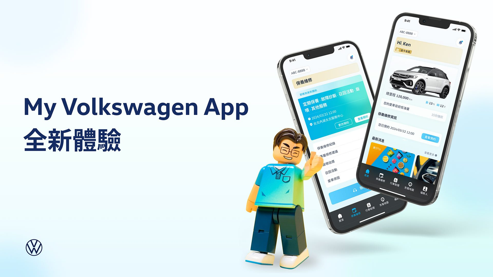
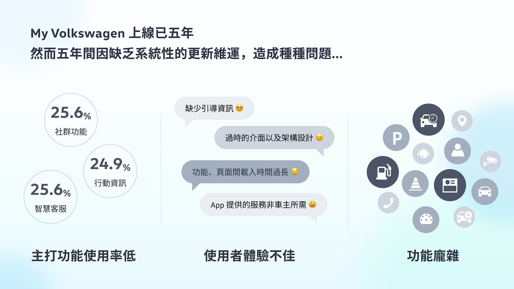
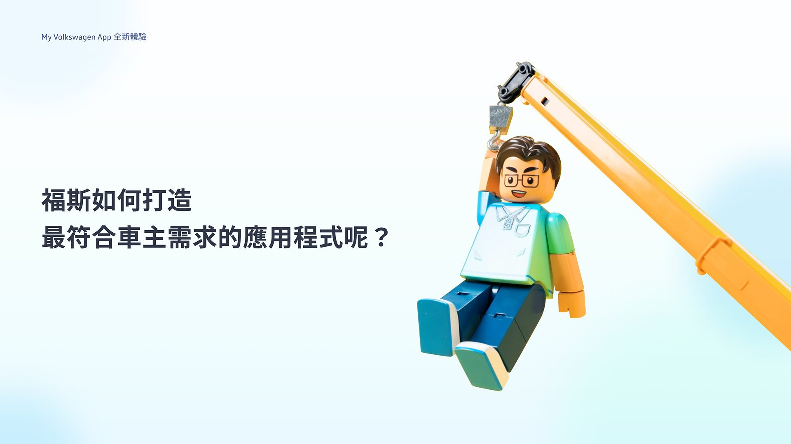
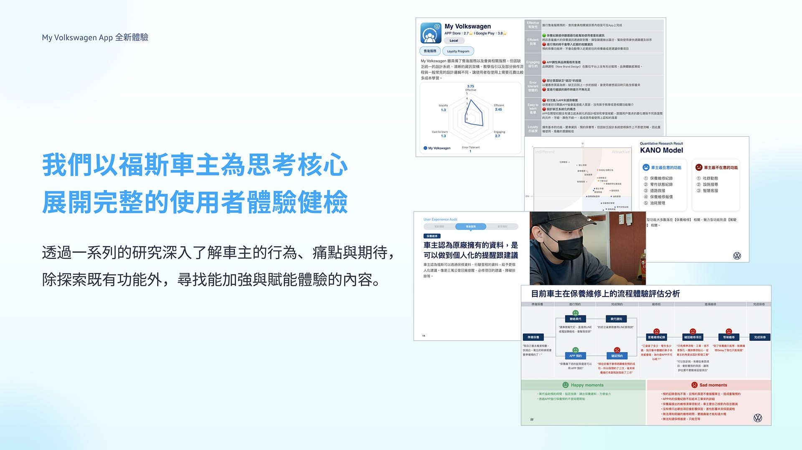
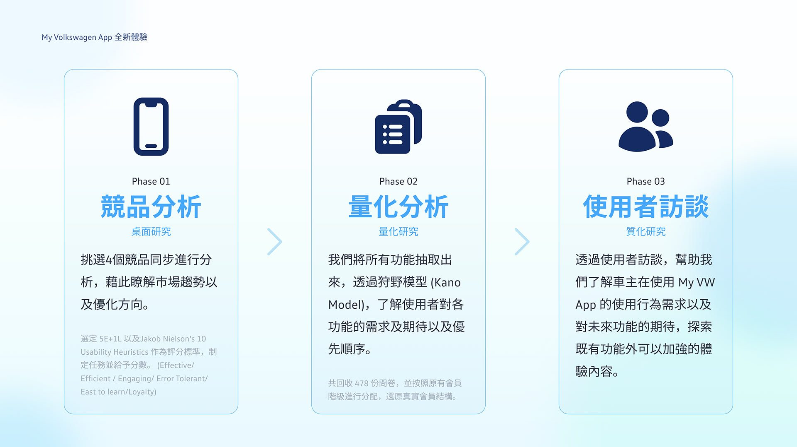
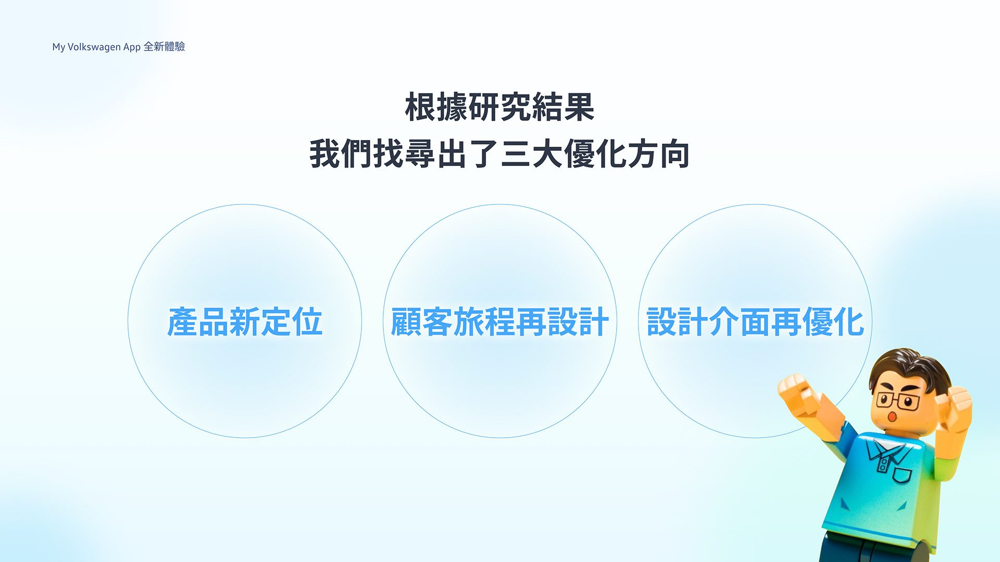
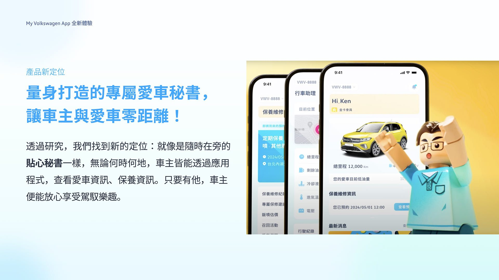
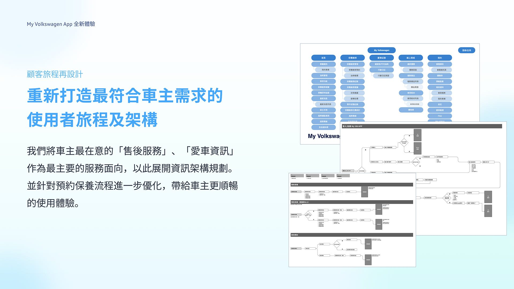
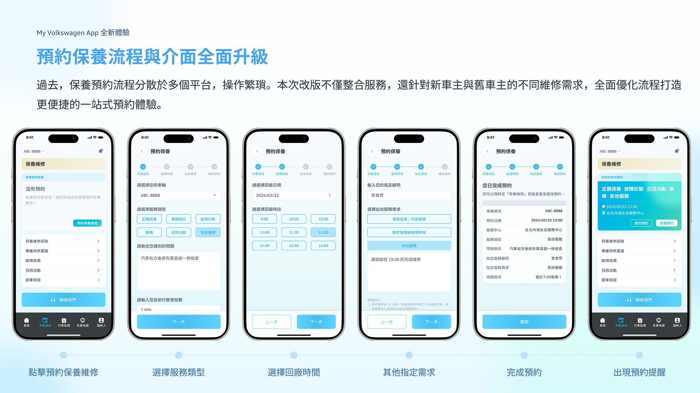
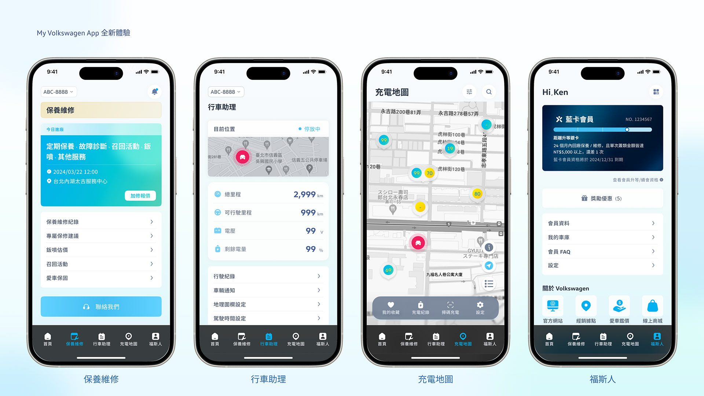
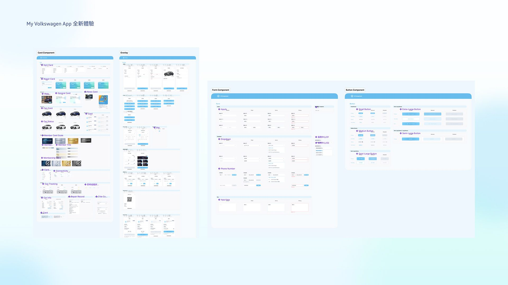
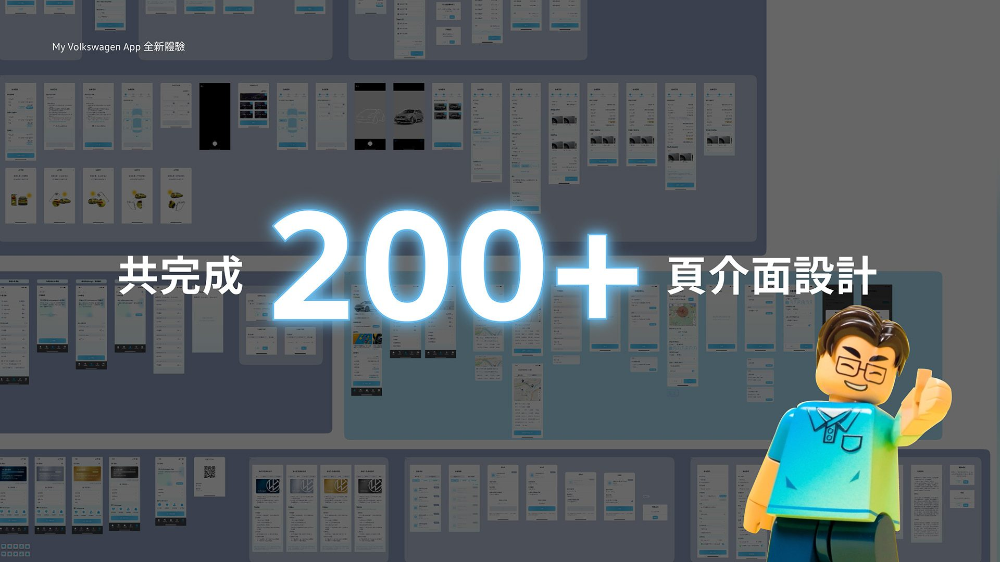